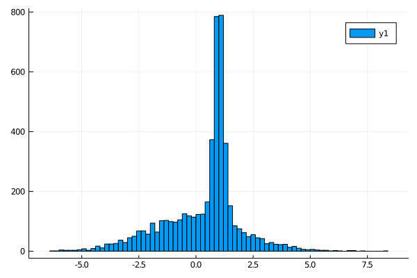

A gaussian mixture model
First of all we define our model,
using KissABC
using Distributions
function model(P, N)
μ_1, μ_2, σ_1, σ_2, prob = P
d1 = randn(N) .* σ_1 .+ μ_1
d2 = randn(N) .* σ_2 .+ μ_2
ps = rand(N) .< prob
R = zeros(N)
R[ps] .= d1[ps]
R[.!ps] .= d2[.!ps]
R
endmodel (generic function with 1 method)Let's use the model to generate some data, this data will constitute our dataset
parameters = (1.0, 0.0, 0.2, 2.0, 0.4)
data = model(parameters, 5000)5000-element Array{Float64,1}:
-1.8117680967595549
0.9648872439302488
0.9019429859197443
2.312526520216747
0.8732217949532237
2.354878808921266
-3.338616644150323
1.0142537350598402
-0.04577074181905918
2.2780897804290987
⋮
-0.23335423421832946
-0.9656797096669978
2.8282852781571344
0.8127864024553992
-0.6078703086345738
2.586505783525415
1.0831849760299597
-0.8894521771943771
0.08567370272064558let's look at the data
using Plots
histogram(data)
savefig("ex1_hist1.svg");
we can now try to infer all parameters using KissABC, first of all we need to define a reasonable prior for our model
prior = Factored(
Uniform(0, 2), # there is surely a peak between 0 and 2
Uniform(-1, 1), #there is a smeared distribution centered around 0
Uniform(0, 1), # the peak has surely a width below 1
Uniform(0, 4), # the smeared distribution surely has a width less than 4
Beta(2, 2), # the number of total events from both distributions look about the same, so we will favor 0.5 just a bit
);let's look at a sample from the prior, to see that it works
rand(prior)(1.0969540484116473, 0.808602340225038, 0.2045791430775432, 1.3751168697951854, 0.34488351026979447)now we need a function to compute summary statistics for our data, this is not the optimal choice, but it will work out anyway
function S(x)
r = (0.1, 0.2, 0.45, 0.55, 0.8, 0.9)
quantile(x, r)
endS (generic function with 1 method)we will define a function to use the model and summarize it's results
summ_model(P, N) = S(model(P, N));now we need a distance function to compare the summary statistics of target data and simulated data
summ_data = S(data)
D(P, N = 5000) = sqrt(mean(abs2, summ_data .- summ_model(P, N)));we can now run ABCDE to get the posterior distribution of our parameters given the dataset data
approx_density = ApproxPosterior(prior, D, 0.1)
res =
sample(approx_density, AIS(15), MCMCThreads(), 4000, 4, burnin = 300, progress = false)
@show resObject of type AISChain (total samples 16000)
number of samples: 4000
number of parameters: 5
number of chains: 4
┌─────────┬─────────────────────┬─────────────────────┬──────────────────────┬──────────────────────┬─────────────────────┐
│ │ 2.5% │ 25.0% │ 50.0% │ 75.0% │ 97.5% │
├─────────┼─────────────────────┼─────────────────────┼──────────────────────┼──────────────────────┼─────────────────────┤
│ Param 1 │ 0.8636068881894785 │ 0.9609956893723147 │ 1.0292305183171098 │ 1.0912516559037369 │ 1.1963487386004874 │
│ Param 2 │ -0.7875753686307255 │ -0.1489163347901043 │ -0.08164647808528727 │ -0.02264615463845765 │ 0.07367391580020484 │
│ Param 3 │ 0.06891145824372241 │ 0.15017720880593866 │ 0.22315951095897132 │ 0.30590943913940505 │ 0.5674535512628713 │
│ Param 4 │ 1.7404549139137262 │ 1.8555934664057807 │ 1.9601893017716632 │ 2.0692461032048235 │ 2.3032773494568537 │
│ Param 5 │ 0.3051165863548498 │ 0.3544500214777433 │ 0.39686213710389906 │ 0.4402590871424515 │ 0.567864981544934 │
└─────────┴─────────────────────┴─────────────────────┴──────────────────────┴──────────────────────┴─────────────────────┘
the nominal values of the parameters lie inside the CI.
This page was generated using Literate.jl.